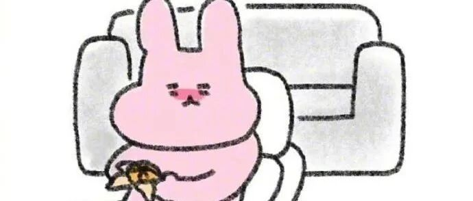

攻略｜ipad挑选指南，早买早享受！
和 我 一 起 治 愈 生 活

图：@网络
文：@秋秋
来了来了，带着干货的秋秋又来啦～
大家好我是秋秋呀，之前种草了很久ipad，买来之后发现真香！大大提升学习和工作效率！
如果你正计划或将会买ipad，这篇文章一定收藏看看～如果不打算买，看完之后也许会种草🙈
本文阅读预计3分钟，内容索引
（1）我的ipad介绍：
——学习、工作、生活
（2）ipad怎么选：
——型号、尺寸、容量
（3）避坑ipad配件：
——pencil 、纸膜、笔尖套
（4）常用ipad软件：
——效率、笔记、阅读
——学习、英语、其它
内容涉及全面，干货满满！
1
我的ipad介绍
我的ipad型号是 iPad air3，特点比较轻薄，64g内存，价格3800多。

有了ipad之后的幸福感，且听我一一道来：
学习
首先可以做笔记，连接pencil写字顺畅；分屏看网课也变的so happy ；
用好阅读app根本不用买书了，超多学习软件打开学习大门～

工作
批改文件很快捷，正常签字看pdf都ok。还可以投屏电脑进行讲课，写作等事情基本不用电脑～

生活
玩游戏更快乐，看剧大屏幕很爽，电池容量大不用担心手机没电～
最重要的，开启我的绘画之旅：

一个视频，真香👇：
2
ipad超全选购指南
简单得瑟之后，下面说说究竟怎么选。
毕竟当时我也是做了半个多月的功课，先看表格，再一个个解释：

*我真贴心哈哈😄
（1）型号
Ipad目前的型号有pro Air mini ，每个型号又都有一代二代三代。所以一开始决定购买的时候真的晕了。

iPad Pro：高端款。类比手机系列的s系列，价格在6000➕左右。
如果你：不差钱、对绘画要求高、对性能要求高、买啥都喜欢新款的集美；
以上满足以上任意一点，随意买。
iPad Air ：中高端款 。和ipad pro的关系，就是iPhonex 和xs的区别，个人认为性价比超高，没有什么硬伤，而且越用越觉得香的那种。

iPad2018、2019 ：入门款。非贴合屏幕（写字的时候有写在玻璃上的感jio）和重量是硬伤，但是胜在便宜也能链接触屏笔。
所以性价比高。钱不多首选。
iPad Mini：中端款。小小惹人爱，如果喜欢小屏幕可以选择这款。
可以连接pencil，价格也不贵。
（2）尺寸
从大小来看，除了iPad pro有12.9大尺寸，mini7.9小尺寸，其他款式大小区别都不大。
图片为例， 分别是12.9、10.5、10.2、7.9的区别。

iPad air 10.5寸比 ipad208，2019稍微屏幕大一丢丢，看起来也更舒服。
所以我的建议是：正常没有额外需求，选择iPad Air3、iPad2018、2019都可以，喜欢大的买Pro，喜欢小的买Mini即可。
（3）内存
我的手机是512g内存，用了一年半，一万多张照片，才只用了256g。
而wifi很普遍不用缓存很多视频，正常工作学习来说：128g足够。

当然，因为我手机内存很大，ipad也不下载大型游戏不保存很多照片，64g就够。
所以我的建议是：正常工作学习32-64g，重度用户128-256g；打算5年不换ipad，买512g。
💻现在，再复习一下这张表格：
预算2000以下：ipad2018✅
优点：可连接pencil，正常学习工作足够
缺点：非贴合屏幕、有点沉
预算3000左右:
ipad2019，ipadmini5✅
优点：能用到新款的系统、能连接
缺点：硬件上没有升级
价格4000左右：ipad air3✅
优点：轻、贴合屏幕、能连接pencil
缺点：目前我觉得挺香
预算4000以上：
✨6000左右：ipadpro11寸
优点：硬件升级
缺点：没钱是我的缺点，它很完美
✨8000左右：ipadpro12.9寸
优点：你的下一台电脑
缺点：不能替代电脑
3
ipad配件
如果能完成以上挑选工作，相信我你会开始兴致勃勃的开始挑选配件。
我当然这踩过一些坑，这里推荐以下必买好物：
PENCIL✏️

必须买！
实不相瞒我在上大学的时候就短暂的拥有过一段时间的ipad，但是当时没舍得买pencil（网上买了替代还是没有原装的感觉），就觉得ipad只是一个看剧工具，最后就二手出售了。
但是这一次，买了pencil，才是打开新世界的大门。
究其原因：ipad没有pencil，就只是一个大屏幕的手机，除了屏幕大没有什么优点。
但是有了pencil，写字画画做笔记看书，完全是个移动的本子，这才是它的价值所在，独立于手机和电脑的第三个应用场景。
类纸膜💻

普通的膜一般都是高清膜，很滑，不是特别适合手写。所以有了pencil建议换上纸膜增加摩擦力。
但是好坏参半。这个膜看剧的时候发黄，降低了一些快落。
笔尖套🍂

小小的笔尖套大大的能量，我的笔尖套10块钱买了15个，真的特别好用！体会到了在纸上写字的快乐！！！
最后还有我可爱的保护壳，能带来一些好心情～
4
我的宝藏APP

最后一部分说下我的ipad软件，因为太多以后有机会逐个介绍使用，今天来个全家福：
（1）效率app

极简时钟：没有广告ins风计时器
番茄todo：最干净的番茄钟
日历：apple最好用的时间管理神器
Costudy: 一起云学习
小日常：养成好习惯
滴答清单：设好待办提醒
（2）学习app

网易公开课：看到更大世界
哔哩哔哩：看吃播
网易云课堂：学习技能
中国大学慕课：学习知识
ted英语演讲：吃饭的时候也要学习
（3）笔记app
（太多，重点说几个）

GoodNotes：做笔记，是付费的
印象笔记：整理资料
Xmind：做思维导图
幕布：写作可以一键生成思维导图
讯飞语记：做读书笔记
（4）阅读app

微信读书：书很多、大部分免费
藏书馆：补充上一个没有的书
杂志迷：酿很多杂志都免费看
FT中文网：看大事专用
（5）英语app
（6）治愈app
（7）娱乐app
我到时候发在抖音上。
最后，ipad的一些使用技巧，就直接放视频啦～
写完这篇文章真的要去休息♨️，当时选ipad挑了很久，买来之后各种研究，今天也是一个小总结了。
希望这篇文章对你有所帮助～我们下期见。
其他文章推荐：

原创文章，转载请告知本人并标注来源
工作联系：17865514429 （微信）
请注明来意 :)
@微博：秋秋一日甜
喜欢记得星标，让我们一起成长